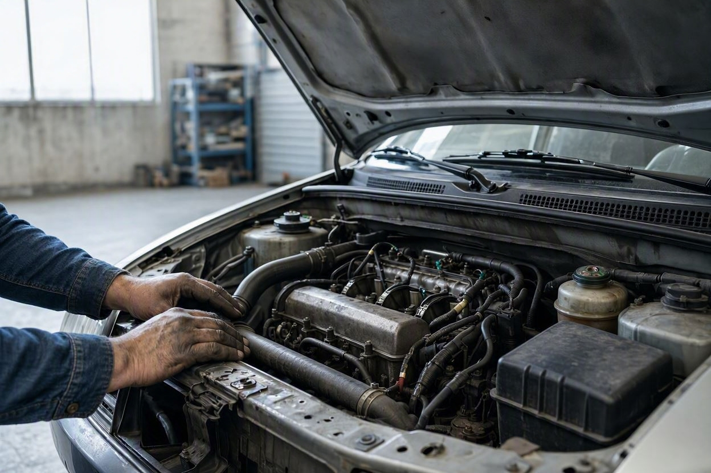
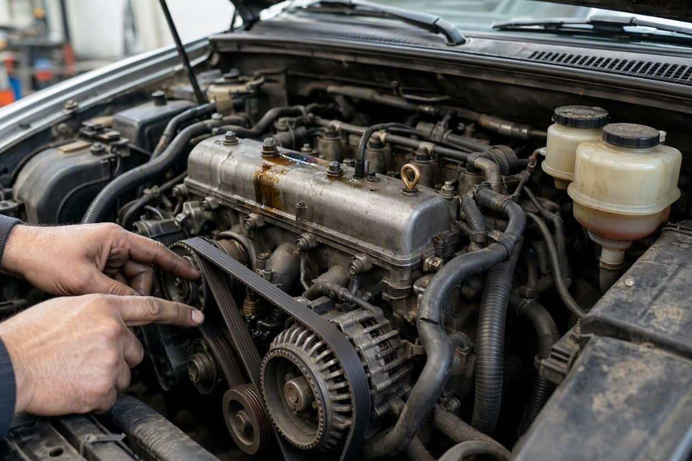
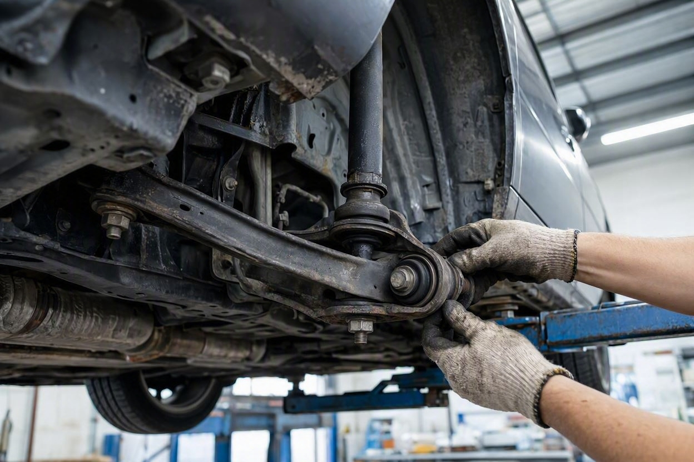
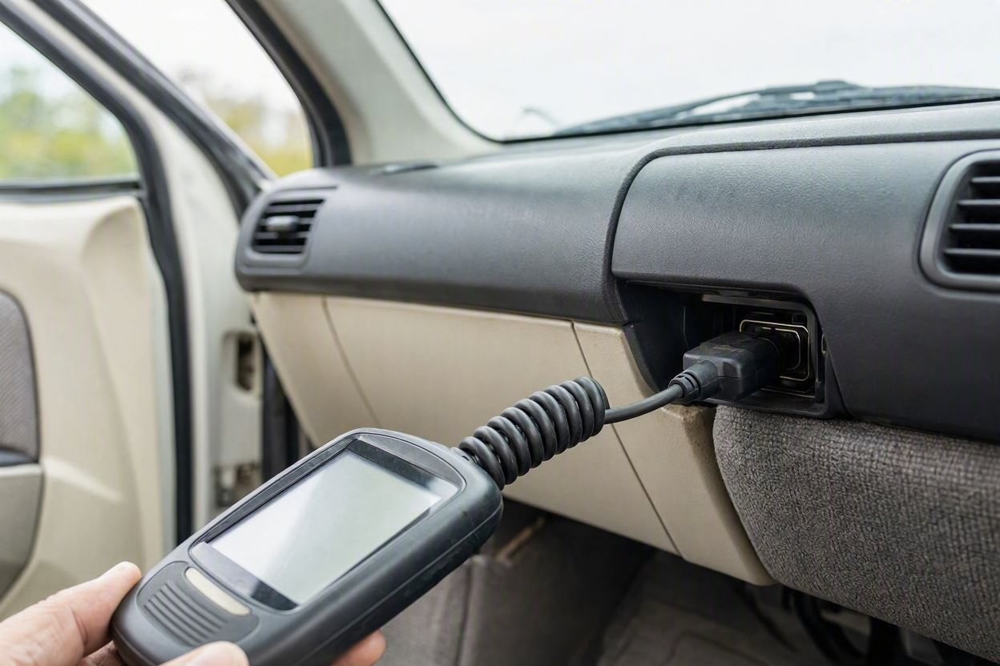

کارشناسی فنی خودرو شامل چه بخشهایی است؟
خیلی از خریدارها فکر میکنند کارشناسی خودرو یعنی فقط تشخیص رنگ. اما بخش فنی، سلامت موتور، گیربکس و سیستمهایی را بررسی میکند که هزینه تعمیرشان میتواند از خود معامله سنگینتر شود.
وقتی میخواهید یک خودروی دست دوم بخرید، ظاهر تمیز و رنگ سالم فقط بخشی از ماجراست. کارشناسی فنی همان بخشی است که وضعیت واقعی قلب و اجزای مکانیکی ماشین را مشخص میکند. اگر میخواهید پیش از معامله بدانید دقیقاً چه چیزهایی بررسی میشود، کارماچک این سیستمها را بهصورت جداگانه و دقیق کنترل میکند. در این مقاله بخشهای اصلی کارشناسی فنی را یکییکی مرور میکنیم تا بدانید هر قسمت چه چیزی را چک میکند و چرا اهمیت دارد.
کارشناسی فنی خودرو بررسی سیستمهای مکانیکی و عملکردی ماشین است. بخشهای اصلی آن شامل موتور، گیربکس و انتقال قدرت، سیستم تعلیق و فرمان، ترمز، سیستم برق و باتری، خطاخوانی با دیاگ و تست رانندگی است. هدف، پیدا کردن ایرادهای پنهان و برآورد هزینه احتمالی تعمیر پیش از خرید یا فروش است.
- کارشناسی فنی با کارشناسی رنگ و بدنه فرق دارد و روی عملکرد مکانیکی تمرکز میکند.
- بخشهای اصلی: موتور، گیربکس، تعلیق و فرمان، ترمز، سیستم برق و دیاگ.
- تست رانندگی رفتار واقعی خودرو را زیر بار نشان میدهد.
- خطاخوانی با دستگاه دیاگ، ایرادهای پنهان الکترونیکی را آشکار میکند.
- خروجی خوب، فقط لیست ایراد نیست، بلکه اثر آنها روی هزینه و ارزش معامله است.
کارشناسی فنی خودرو یعنی چه؟
کارشناسی فنی خودرو یعنی بررسی سیستمهای مکانیکی و الکترونیکی ماشین برای سنجش سلامت و عملکرد آنها. این بخش با کارشناسی رنگ و بدنه فرق دارد. کارشناسی رنگ به سراغ ظاهر و تاریخچه تصادف میرود، اما کارشناسی فنی به این پاسخ میدهد که خودرو در عمل چطور کار میکند و چه چیزی ممکن است بهزودی خرج روی دست شما بگذارد.
یک کارشناسی کامل معمولاً هر دو را کنار هم دارد. اما اگر نگرانی اصلی شما موتور و گیربکس است، بخش فنی همان جایی است که باید با دقت بررسی شود.
بررسی موتور
موتور مهمترین و پرهزینهترین بخش خودرو است، برای همین معمولاً در مرکز کارشناسی فنی قرار دارد. کارشناس هم در حالت خاموش و هم روشن آن را بررسی میکند.

مواردی که در بخش موتور بررسی میشوند:
- صدای موتور در دور آرام و هنگام گاز خوردن.
- نشتی روغن یا آب از واشرها، درزها و کارتر.
- رنگ و شدت دود اگزوز که میتواند نشانه مصرف روغن یا ایراد احتراق باشد.
- وضعیت تسمهها، شیلنگها و سطح مایعات.
- دمای کارکرد و عملکرد سیستم خنککاری.
هر کدام از این نشانهها بهتنهایی قطعی نیست. برای مثال کمی دود سفید در لحظه استارت سرد میتواند طبیعی باشد، اما دود آبی مداوم موضوع جدیتری است. کارشناس این تفاوتها را کنار هم میگذارد.
گیربکس و انتقال قدرت
بعد از موتور، گیربکس بیشترین اهمیت را دارد، چون تعمیر یا تعویض آن هزینه بالایی دارد. در خودروهای دندهای، کلاچ و کارکرد نرم دندهها بررسی میشود. در خودروهای اتوماتیک، نرمی تعویض دنده و نبود ضربه یا تأخیر اهمیت دارد.
- جا رفتن نرم دندهها بدون صدا یا گیر کردن.
- عملکرد کلاچ و نقطه درگیری آن.
- در اتوماتیک: تعویض بدون ضربه، لرزش یا مکث طولانی.
- صدای غیرعادی از سیستم انتقال قدرت هنگام حرکت.
پیش از معامله، خودرو را بررسی کنید
اگر درباره وضعیت موتور یا گیربکس خودرو مطمئن نیستید، بررسی تخصصی میتواند ابهامهای معامله را کمتر کند.
شروع کارشناسی خودروتعلیق، فرمان و ترمز
این سه سیستم مستقیم با ایمنی و راحتی رانندگی سر و کار دارند. کارشناس معمولاً خودرو را روی جک یا لیفت میبرد تا اجزای زیر آن را از نزدیک ببیند.

- کمکفنر و بوشها از نظر روغنریزی، لقی و صدا.
- سیبکها، طبقها و اجزای فرمان.
- لنت و دیسک ترمز و عملکرد ترمز در سرعتهای مختلف.
- کشیدن خودرو به یک سمت هنگام ترمز یا حرکت مستقیم.
لقی در فرمان یا صدای تعلیق روی دستانداز، اغلب اولین نشانههایی هستند که خریدار در تست کوتاه متوجهشان نمیشود.
سیستم برق، باتری و دیاگ
بخش زیادی از خودروهای امروزی به سیستمهای الکترونیکی وابستهاند. برای همین خطاخوانی با دستگاه دیاگ به بخش مهمی از کارشناسی فنی تبدیل شده است.

- خطاخوانی ایسیو و ماژولهای خودرو با دستگاه دیاگ.
- سلامت باتری و سیستم شارژ.
- عملکرد چراغها، شیشهبالابرها، کولر و بخاری.
- ایرادهای پنهانی که چراغ چک را روشن یا خطا را ذخیره کردهاند.
دستگاه دیاگ میتواند خطاهایی را نشان دهد که در تست رانندگی معمولی دیده نمیشوند. با این حال، یک خطای ذخیرهشده همیشه بهمعنای ایراد فعال نیست و باید تفسیر شود.
شاسی و بدنه
هرچند تمرکز اصلی کارشناسی فنی روی عملکرد است، سلامت شاسی و اتاق هم بررسی میشود، چون مستقیم روی ایمنی و ارزش خودرو اثر دارد. کارشناس تقارن بدنه، درزها و نشانههای ضربه یا جوش را کنترل میکند.
اگر میخواهید با نشانههای دقیقتر ضربهخوردگی آشنا شوید، راهنمای تشخیص شاسی ضربه خورده خودرو این موضوع را کاملتر توضیح میدهد.
تست رانندگی
تست رانندگی همه بخشهای قبلی را کنار هم و زیر بار واقعی میسنجد. بعضی ایرادها فقط وقتی خودرو در حال حرکت است خودشان را نشان میدهند.
- شتابگیری:واکنش موتور و گیربکس هنگام گاز خوردن.
- ترمز:ایستادن مستقیم و بدون لرزش یا صدا.
- پیچ و دستانداز:رفتار تعلیق و فرمان روی ناهمواری.
- سرعت ثابت:لرزش، کشیده شدن به یک سمت یا صدای غیرعادی.
| بخش | چه چیزی بررسی میشود |
|---|---|
| موتور | صدا، نشتی، دود اگزوز، مایعات، خنککاری |
| گیربکس و انتقال قدرت | کلاچ، نرمی تعویض دنده، صدا و ضربه |
| تعلیق و فرمان | کمکفنر، بوش، سیبک، لقی فرمان |
| ترمز | لنت، دیسک، عملکرد و کشش هنگام ترمز |
| برق و دیاگ | خطاخوانی ایسیو، باتری، چراغها و تجهیزات |
| تست رانندگی | رفتار واقعی خودرو زیر بار |
کارماچک این بخشها را چطور بررسی میکند
کارماچک خدمات کارشناسی خودرو را برای بررسی فنی، رنگ، بدنه و عوامل مؤثر بر ارزش معامله ارائه میدهد. فقط ایراد خودرو را شناسایی نمیکنیم؛ اثر آن روی هزینه تعمیر و ارزش واقعی معامله را هم مشخص میکنیم. اگر میخواهید همه این بخشها یکجا و با گزارش روشن بررسی شوند، میتوانید کارشناسی فنی و بدنه را ثبت کنید. برای مرور کامل موارد قابل بررسی پیش از خرید هم چک لیست خرید خودرو دست دوم کمککننده است.
جمعبندی
کارشناسی فنی خودرو یک بررسی تکمرحلهای نیست، بلکه ترکیبی از چند بخش مستقل است: موتور، گیربکس، تعلیق و فرمان، ترمز، سیستم برق و دیاگ و در نهایت تست رانندگی. هر بخش بخشی از تصویر کلی را میسازد و وقتی کنار هم قرار بگیرند، وضعیت واقعی خودرو روشن میشود. این بررسی به شما کمک میکند پیش از پرداخت پول، هم از سلامت ماشین مطمئن شوید و هم هزینه احتمالی تعمیرها را بدانید.
خودرو را کامل و حرفهای بررسی کنید
پیش از معامله، وضعیت فنی همه سیستمهای خودرو را با یک بررسی دقیق روشن کنید.
ثبت درخواست کارشناسیسؤالات متداول
فرق کارشناسی فنی با کارشناسی رنگ و بدنه چیست؟
کارشناسی رنگ و بدنه روی ظاهر، رنگشدگی و تاریخچه تصادف تمرکز دارد. کارشناسی فنی به عملکرد سیستمهای مکانیکی و الکترونیکی مثل موتور، گیربکس، تعلیق و ترمز میپردازد. یک کارشناسی کامل معمولاً هر دو را کنار هم انجام میدهد تا هم سلامت ظاهری و هم سلامت فنی روشن شود.
مهمترین بخش کارشناسی فنی کدام است؟
موتور و گیربکس معمولاً مهمترین بخشها هستند، چون تعمیر آنها بیشترین هزینه را دارد. با این حال، هیچ بخشی را نباید نادیده گرفت. ترمز و تعلیق به ایمنی مربوطاند و سیستم برق میتواند ایرادهای پنهانی داشته باشد که فقط با دیاگ آشکار میشوند.
آیا کارشناسی فنی بدون دستگاه دیاگ کامل است؟
خیر. در خودروهای امروزی بخش زیادی از ایرادها در سیستمهای الکترونیکی ثبت میشوند. بدون خطاخوانی با دیاگ، ممکن است ایرادهایی که چراغ چک را روشن کردهاند یا در حافظه ذخیره شدهاند دیده نشوند. دیاگ بخش مهمی از یک کارشناسی فنی دقیق است.
تست رانندگی چه چیزی را مشخص میکند؟
تست رانندگی رفتار خودرو را زیر بار واقعی نشان میدهد. بعضی ایرادها مثل لرزش در سرعت مشخص، ضربه گیربکس، کشیده شدن هنگام ترمز یا صدای تعلیق فقط هنگام حرکت خودشان را نشان میدهند و در بررسی ایستا دیده نمیشوند.
کارشناسی فنی چقدر طول میکشد؟
مدت زمان به نوع خودرو و دامنه بررسی بستگی دارد و از خودرویی به خودروی دیگر فرق میکند. یک بررسی فنی کامل شامل بازدید ایستا، خطاخوانی و تست رانندگی است. برای زمان دقیق بهتر است با مرکز کارشناسی هماهنگ کنید، چون شرایط هر خودرو متفاوت است.
آیا نتیجه کارشناسی فنی صددرصد قطعی است؟
کارشناسی فنی احتمال ایرادها را بسیار روشن میکند، اما تشخیص قطعی همیشه ممکن نیست. بعضی ایرادها فقط در شرایط خاص بروز میکنند. هدف کارشناسی، کاهش ریسک معامله و روشن کردن وضعیت کلی خودرو است، نه صدور تضمین بیخطا.